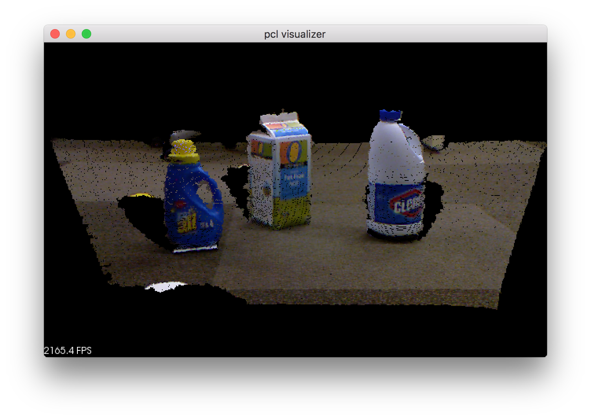

PCL.jl
The Julia wrapper for Point Cloud Library (PCL)
https://github.com/JuliaPCL/PCL.jl
PCL — Module.The Julia wrapper for Point Cloud Library (PCL)
With the packages, e.g., you can visualize a point cloud in 5 lines:
using PCLCommon, PCLIO, PCLVisualization
cloud = PointCloud{PointXYZRGB}("your_pcd_file.pcd")
viewer = PCLVisualizer("pcl visualizer")
addPointCloud(viewer, cloud, id="input")
spin(viewer) # you will see the PCLVisualizer
Why?
PCL.jl was stated to give us fast prototyping using PCL in interactive environment, without much loss of computational efficiency and flexibility.
You might find that there is already a python binding (strawlab/python-pcl) for the purpose, however, it lacks flexibility in particular; it only supports PointXYZ for point clouds at the moment. I guess the reason why it doesn't support arbitary point types for point clouds is that there is not elegant and simple way to expose C++ templated classes in python (actually I tried, but couldn't figure it out). Since I wanted to use arbiraty point types for point clouds, I decided to create a new one.
The reasons why I started writing the Julia (not python) binding are:
The Julia C++ interface Keno/Cxx.jl is quite powerful: It enables us to call C++ functions/methods directly from Julia without any glue code (unlike cython and swig), embed C++ into Julia and vise versa.
Julia's types can be parameterized and exposing C++ templated classes is quite straightfood: e.g. C++
pcl::PointCloud<PointT>can be represented asPointCloud{PointT}in Julia.
Comparison to python-pcl
Pros:
Support arbitaty point types for point clouds, whereas python-pcl only supports
PointXYZSupport PCL 1.8 or later
More consistent APIs
Can write mixed C++/Julia
PCLVisualizer: Jupyter integration using off-screen rendering
Cons:
Only works on osx for now
Hard to build entire dependencies
Sometime segfaults in Cxx.jl and Julia when doing wrong
Dependencies (in short)
API guidelines
Function names should be exactly same between Julia and C++.
C++ template classes are available in Julia as templated types
C++ dereferences which sometimes needed in C++, are hidden in implementation in Julia
e.g.
In C++:
pcl::PassThrough<pcl::PointXYZ> pass;
pass.setInputCloud (cloud);
pass.setFilterFieldName ("z");
pass.setFilterLimits (0.0, 1.0);
pass.filter (*cloud_filtered);In Julia:
pass = PassThrough{PointXYZ}()
setInputCloud(pass, cloud)
setFilterFieldName(pass, "z")
setFilterLimits(pass, 0.0, 1.0)
filter(pass, cloud_filtered)Package structure
To simplify development and minimize dependencies, the Julia wrapper consists of the packages below:
following the PCL module structure except for the LibPCL.jl which manages binary dependencies (i.e. search installed PCL shared libraries or build and install them if not found).